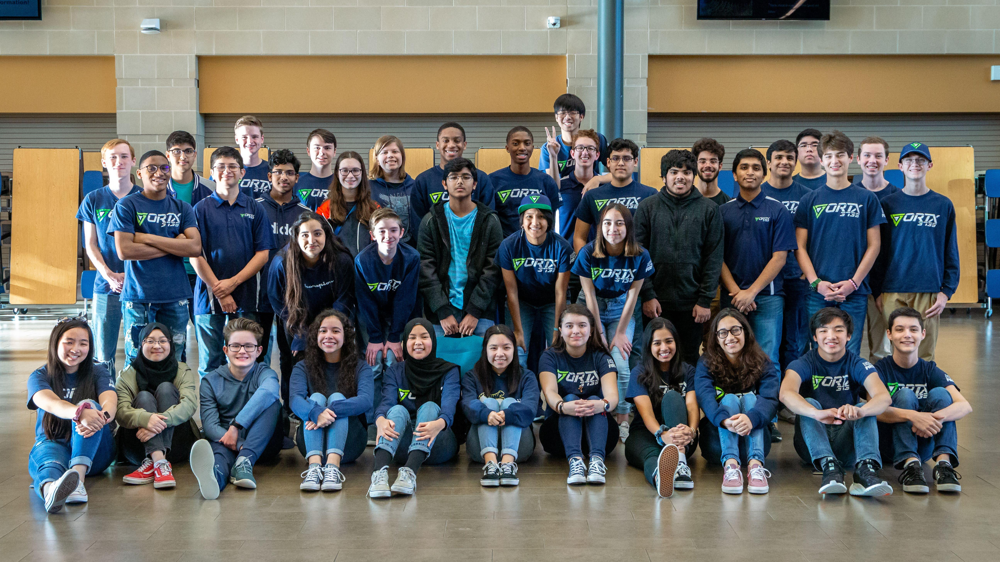

ABOUT US
VorTX 3735 is an FRC robotics team based in Klein ISD. We're comprised of over 90 members from all five district high schools, and 45% of our members are female. We have competed in the FRC World Championships for the past four years. In 2015 with our robot STAG, 2016 with Sabre, 2017 with Tempest, and 2019 with KIRT.